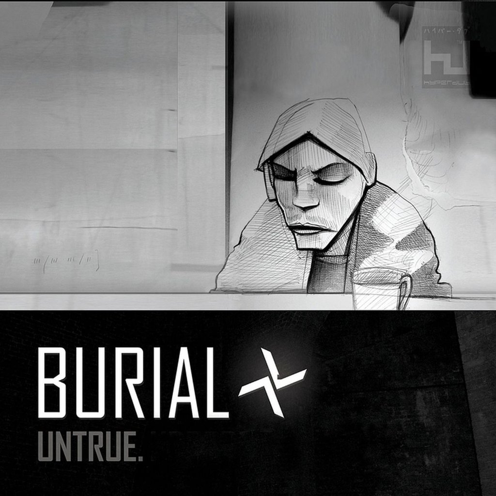

Untrue - Burial
Created: 2021-07-02 | Modified: 2021-07-18

Sick album cover. Looks industrial as hell.
Burial. Untrue. 2007. The classic album defining the UK deep city sound.
My first exposure to Burial came from the album Mt. Eden: Mt Eden Album. It was a remix of Archangel. I liked it from the start. Only in 2014 or so did I discover the origin album, Untrue.
Nice album. Categorized by a perfect display of drum programming, and floaty, low-budget vocals. Never full vocals either. Just snippets. Each song is really similar in mixing and overall production. This isn't a bad thing. The end result is a centered and conceptual album surrounded around clever mixing.
From what I've heard, the creator is an alledged audio engineer, which explains the atypicality of the end mixing and drum production. The "creator", William Emmanuel Bevan, made the album using an audio editor called X, not a Digital Audio Workstation (DAW). This is not an easy feat, fueling the the overall cult-status surrounding Untrue.
Many of the samples on the album seems to have been taken from YouTube. I'm sure you can find links to them somewhere on the Internet.
Favorite song: Homeless, or Untrue (title track) 2020, 2021 (C) Brody Rethy. All rights reserved.
2020, 2021 (C) Brody Rethy. All rights reserved.